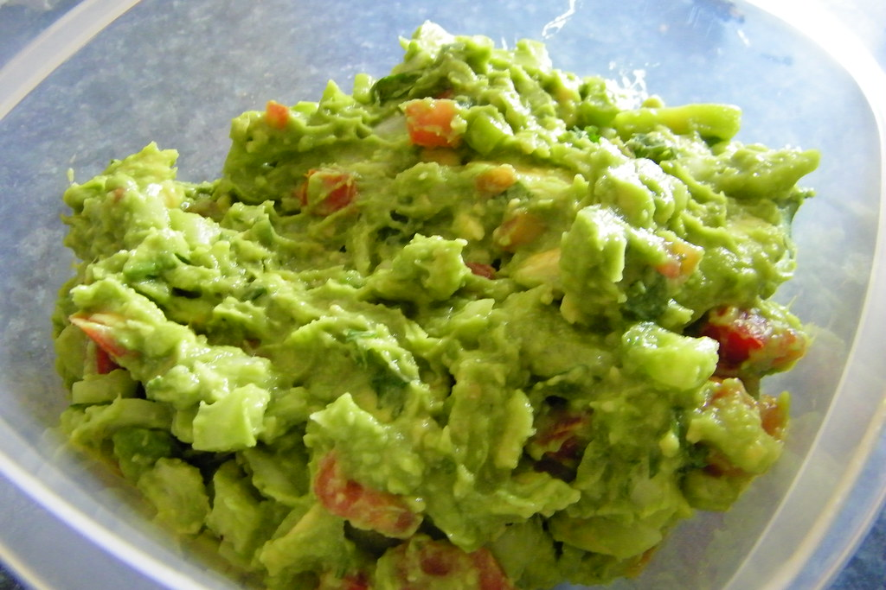

Accueil
Guacamole

Le guacamole est une préparation mexicaine à base d’avocat, de tomates, d’oignons et de piment. Il est souvent servi en accompagnement de plats mexicains comme les tacos ou les burritos, mais peut également être dégusté seul avec des chips de tortilla.
Ingrédients pour 4 personnes
- 2 avocats mûrs
- 1 tomate mûre
- 1/2 oignon rouge
- 1 piment jalapeño (ou autre piment au choix)
- Jus d'1 citron vert
- Sel et poivre au goût
Préparation
- Coupez les avocats en deux, retirez le noyau et récupérez la chair à l'aide d'une cuillère.
- Écrasez la chair des avocats dans un bol à l'aide d'une fourchette.
- Ajoutez le jus de citron vert pour éviter que l'avocat ne noircisse.
- Hachez finement la tomate, l'oignon et le piment, puis ajoutez-les au mélange.
- Salez et poivrez selon votre goût, puis mélangez bien le tout.
- Laissez reposer au réfrigérateur pendant environ 30 minutes avant de servir.